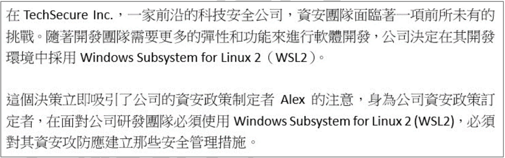
root 帳戶進行日常操作違反了最小權限原則，增加了系統被破壞的風險，是不安全的做法。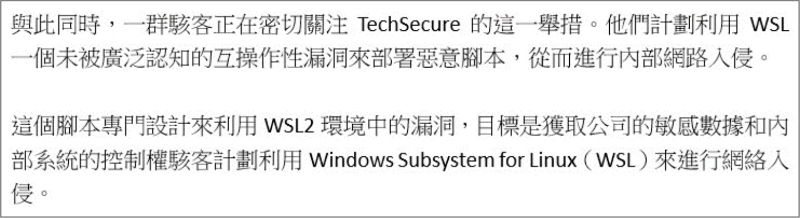
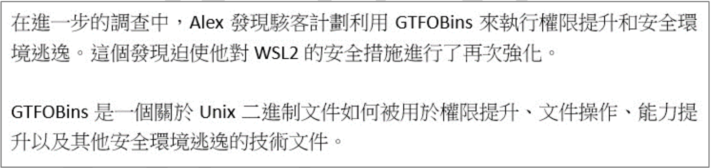
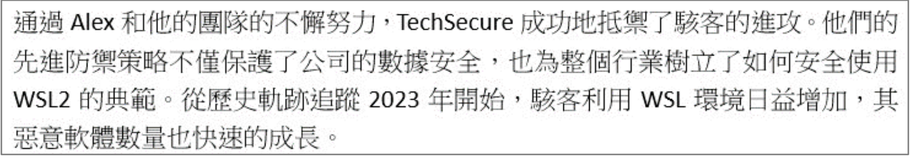
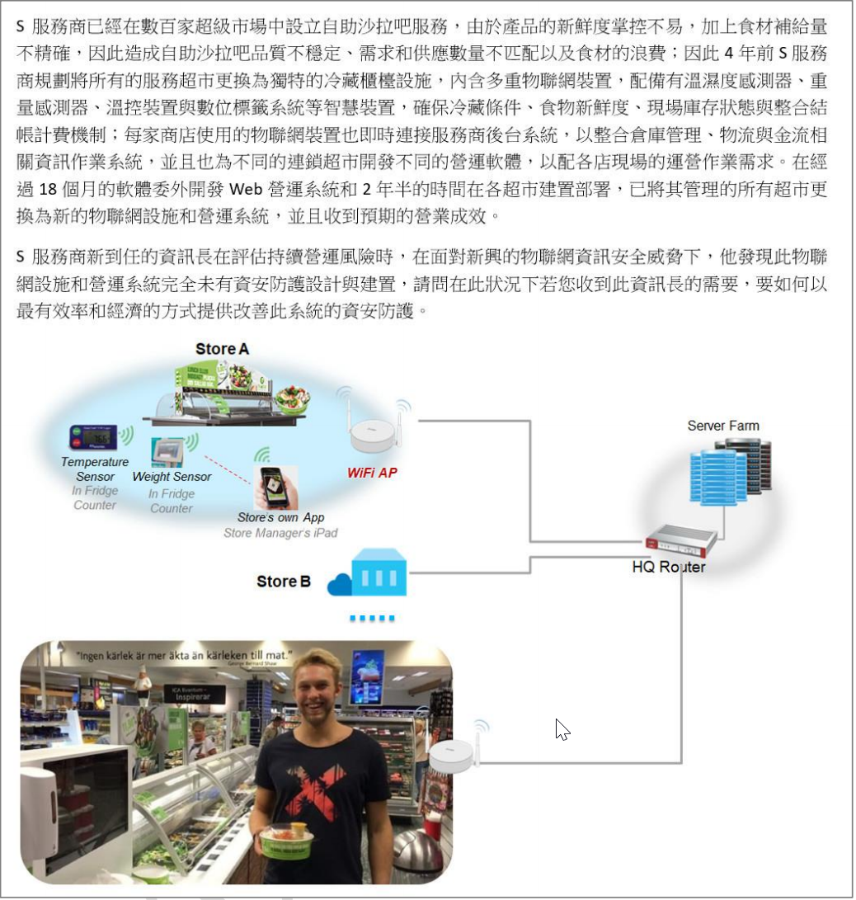
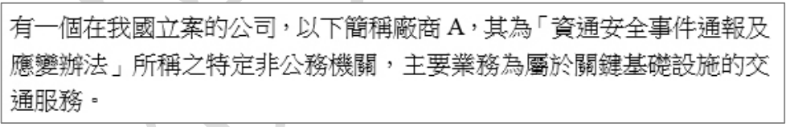
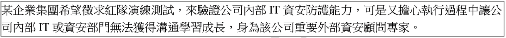
nmcli dev show 是 Linux 指令，用於顯示網路裝置的詳細資訊，包括當前分配的 IP 位址、閘道、DNS 伺服器等。透過查看 DNS 伺服器設定，可能間接找出網域控制站 (DC) 的 IP。dig axfr @<dns-server> <domain> 用於嘗試進行 DNS 區域轉送 (Zone Transfer)，如果DNS 伺服器配置不當允許此操作，可以獲取域內所有主機的紀錄。net user 是 Windows 指令，用於列出本機或（在域環境中，配合 /domain 參數）域內的使用者帳號。nmap -Sp -p<ip> 這個指令語法有誤。-Sp (或更新版本的 -sn) 是進行 Ping 掃描，用於發現存活主機，不掃描埠。-p 用於指定掃描的埠。如果要掃描 LDAP 服務（通常在 TCP 389 或 636），應使用類似 nmap -p 389 --script ldap-search <ip> 的指令，利用 Nmap 腳本引擎 (NSE) 來列舉 LDAP 信息。選項中的指令無法用於列舉 LDAP。此敘述錯誤。cme smb ... -u user.txt -p password.txt --no-bruteforce: 使用 CrackMapExec (CME) 對用戶列表 (user.txt) 中的每個用戶嘗試密碼列表 (password.txt) 中的密碼，--no-bruteforce 可能意味著對每個用戶只嘗試少量密碼，符合噴灑概念。Cme<IP> -U 'user' -p 'password' --pass-pol: 這個指令語法看起來不標準（Cme 拼寫，-U 通常是大寫），但意圖可能是用單一用戶/密碼並結合密碼策略進行嘗試，不直接是噴灑。Get-ADDefaultDomainPasswordPolicy 是 PowerShell 指令，用於查詢 Active Directory 的預設密碼策略。這是探索 (Discovery) 階段的行為，用於了解密碼規則，輔助後續的密碼攻擊（包括噴灑），但不是噴灑本身。smbmap -u '' -p '' -P 445 -H <dc-ip>: 使用 smbmap 工具，-u '' -p '' 通常用於匿名或空會話連接，目的是列舉共享資源或用戶，不是進行密碼噴灑。ntds.dit 是 AD 主要的資料, 可以透過下列哪些方式進行提取? (複選)
ntds.dit 檔案包含了 Active Directory 的資料庫（包括使用者帳號和密碼雜湊）。由於它在系統運行時通常被鎖定，提取它需要特殊方法，常見的包括：ntdsutil.exe 是 Windows 內建的 AD 資料庫管理工具，可以使用其 snapshot 或 ifm (Install From Media) 功能來創建包含 ntds.dit 的副本。vssadmin.exe 是磁碟區陰影複製服務 (Volume Shadow Copy Service, VSS) 的命令列工具。可以先創建一個系統磁碟的陰影複製，然後從陰影複製中複製出未被鎖定的 ntds.dit 文件。diskshadow.exe 是另一個用於管理 VSS 的工具，功能與 vssadmin 類似，同樣可以用來創建陰影複製並從中提取 ntds.dit。certutil.exe 是用於管理憑證和憑證服務的工具，雖然它有時被惡意利用於下載檔案或編解碼，但它本身不能直接用於提取 ntds.dit 文件或創建陰影複製。ntds.dit 的方式是 (A)、(B)、(C)。*根據使用者OCR標示，答案為A/B/C*。
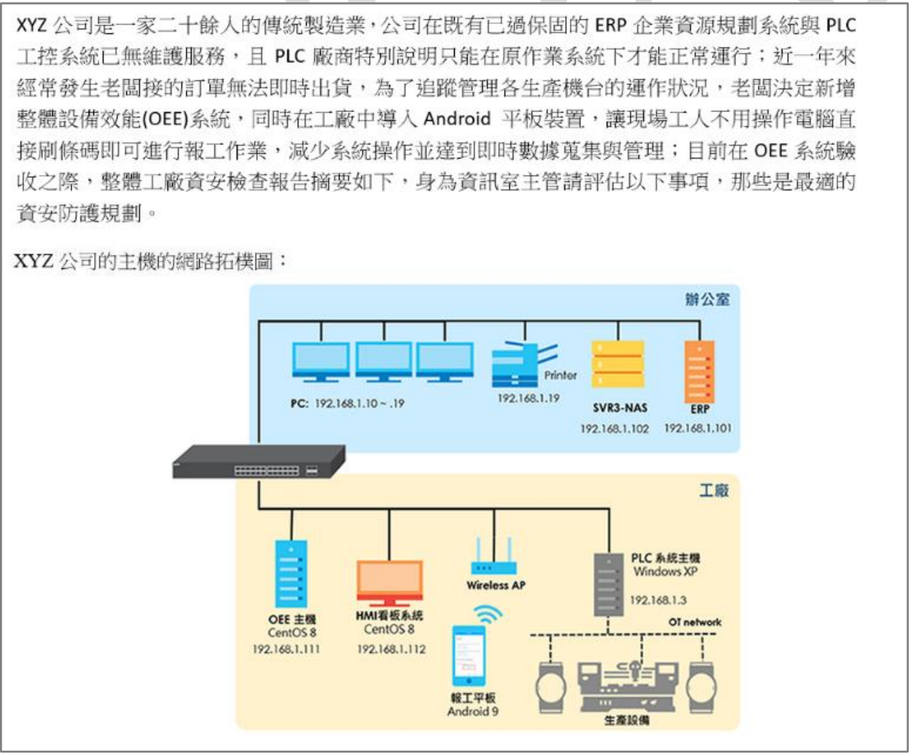
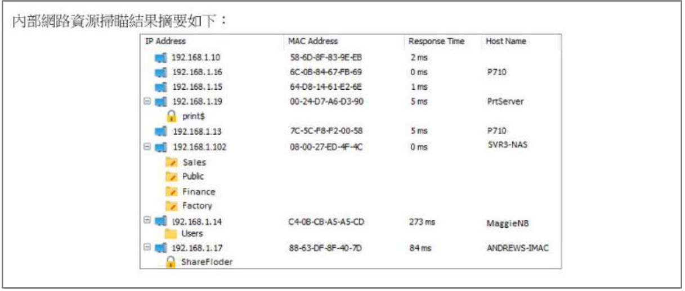
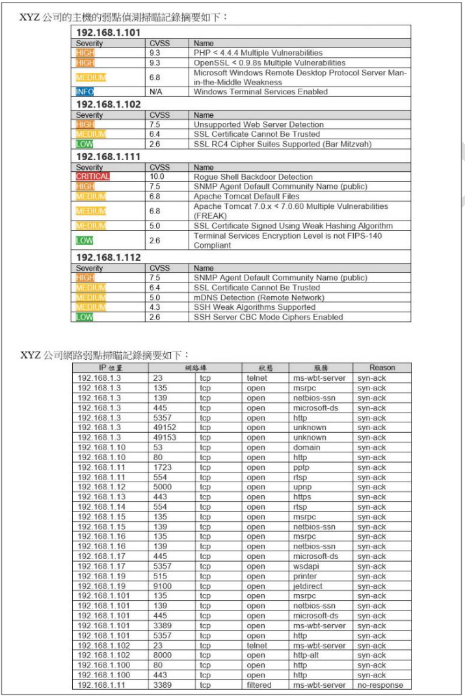
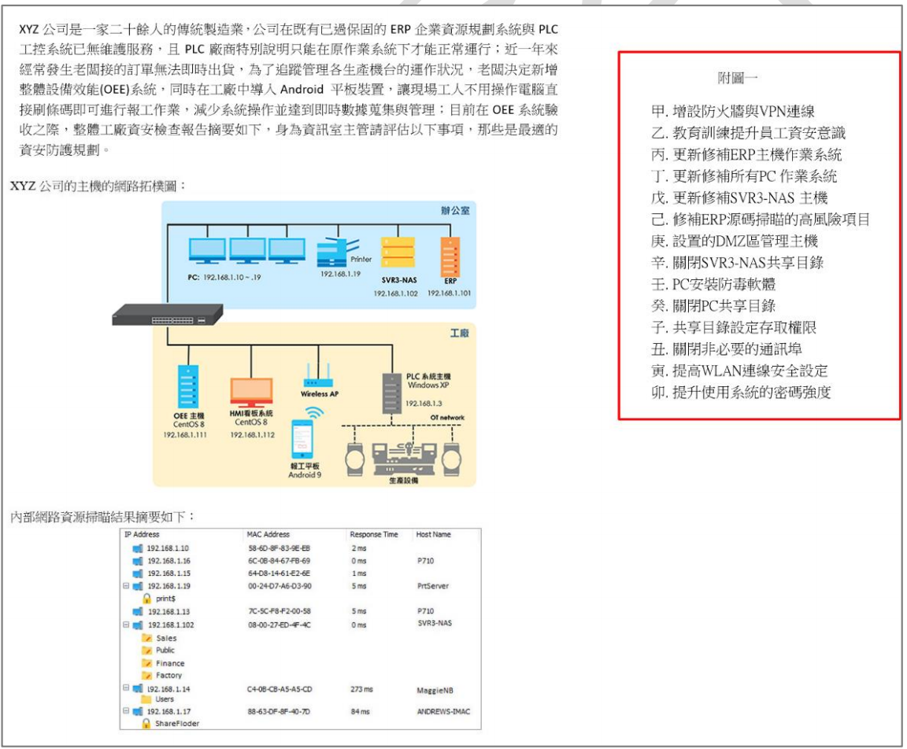
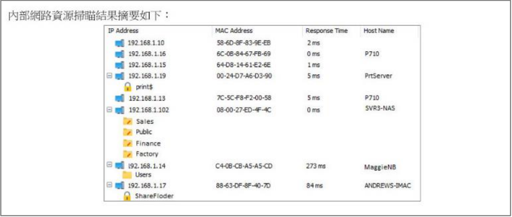
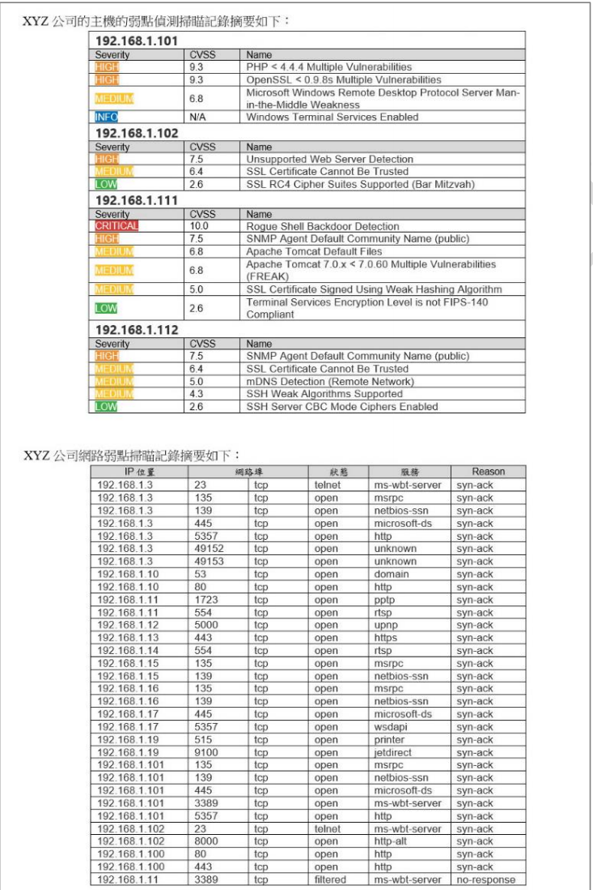
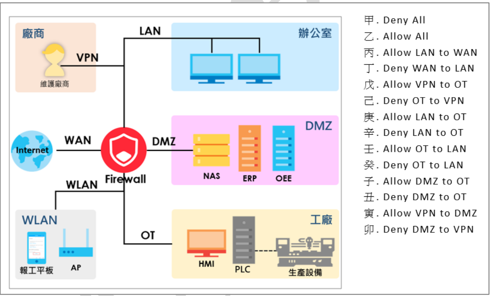